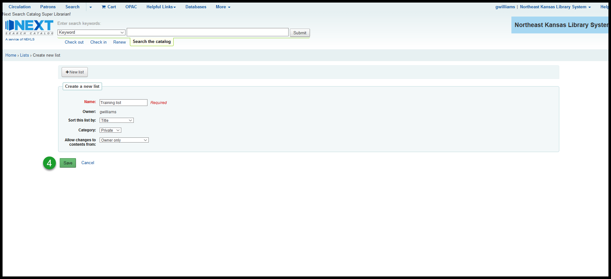
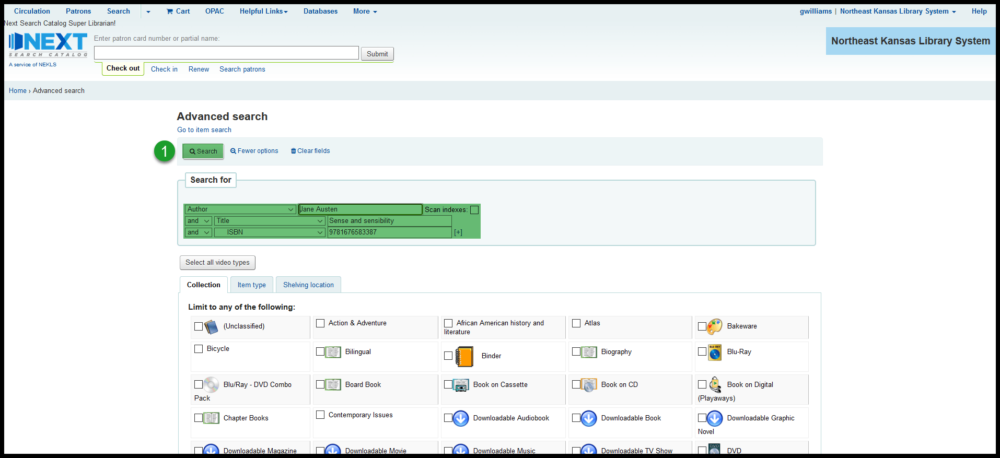
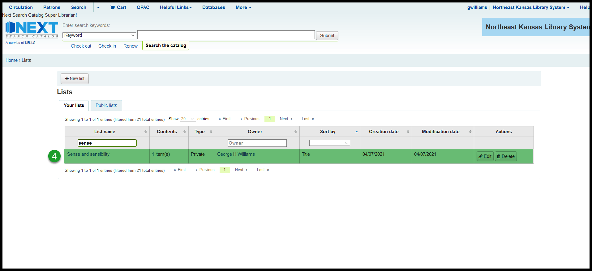
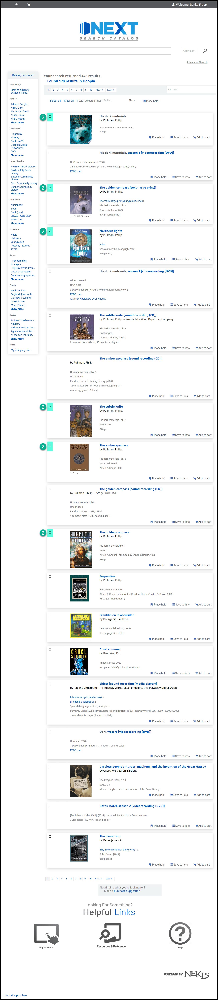

How to create a list¶
Creating lists from the staff client¶
Creating an empty list¶
From the home page, click on “Lists”
Click on the button that says “+ New list”
Give the list a name; set the sort order; mark the list as “Private” or “Public;” and set the “Allow changes …” permissions
Then click on “Save”

The new list should now appear in the list of lists in the Lists module
Create a list from search results¶
Search the catalog (In this example I’m searching for the author “Ian Fleming”)
Add checks to the checkboxes of the titles you want to add to the list you’re creating
Click on “Add to list” from the toolbar and click on “New list” at the very bottom of the drop-down menu
A pop-up window will appear – once you add a name and choose a category, click on “Save”

The new list should now appear in the list of lists in the Lists module
Create a list from a title’s details page¶
Search the catalog (In this example I’m searching for the author “Jane Austen,” the title “Sense and sensibility,” and the ISBN “9781676583387”)

This search will take me to the details page of a specific bibliographic record where I can click on “Add to” and select “List” from the dropdown
A pop-up window will appear – once you add a name and choose a category, click on “Save”
The new list should now appear in the list of lists in the Lists module

Creating lists from the OPAC¶
Creating a list from “Your lists”¶
Click on your account at nextkansas.org
On the summary page, click on “Your lists”
On the “Your lists” tab, click on “+ NEW LIST”
Give the list a name; set the sort order; mark the list as “Private” or “Public;” and set the “Allow changes …” permissions and click on “Save”
The catalog will take you to a “List created” message
Creating a list from a search¶
Search for materials
Check the checkboxes next to the titles you want to add to your list

Click on the “With selected titles” dropdown and choose “New list”
A pop-up window will appear – once you add a name and choose a category, click on “Save”
Go to your account and click on “Your lists”
The list should now appear in your list of lists